MVOFormer：用于鲁棒单目视觉里程计的光流-语义 TransformerMVOFormer: Flow-Semantic Transformer for Robust Monocular Visual Odometry
直接面向视觉里程计，且动态物体抑制和跨域泛化对机器人前端很重要；但摘要看起来偏 frame-to-frame VO，长期漂移、闭环和实时性还需查原文。
一句话工作总结
MVOFormer 用光流和语义双分支 transformer 抑制动态干扰并迭代优化位姿，主打单目 VO 的跨域鲁棒性。
摘要
单目视觉里程计是自主导航和机器人定位的基础，但既有学习式 MVO 方法常受限于缺少可解释的互补特征，或依赖复杂多阶段架构，导致鲁棒性和跨域泛化能力不足。MVOFormer 提出一种新的 transformer 框架：Flow-Semantic Dual Branch Encoder 融合稠密几何运动线索和物体级语义先验，显式区分静态结构和动态干扰；Iterative Multimodal Decoder 进行由粗到细的位姿修正，并动态抑制不可靠区域注意力。实验显示，在无目标域微调条件下，MVOFormer 在 TartanAir、KITTI、TUM-RGBD 和 ETH3D-SLAM 等基准上相比既有学习式 frame-to-frame 方法有更好的 zero-shot 泛化和鲁棒性。
Monocular visual odometry (MVO) is foundational to autonomous navigation and robotic localization. However, existing learning-based MVO approaches often struggle with either a lack of interpretable, complementary features or overly complex multi-stage architectures. These limitations inherently restrict their robustness and cross-domain generalization. In this work, we propose MVOFormer, a novel transformer framework for robust monocular visual odometry. Our architecture features a Flow-Semantic Dual Branch Encoder that synergizes dense geometric motion cues with object-centric semantic priors, explicitly distinguishing static structures from dynamic distractors. These representations are then fused by an Iterative Multimodal Decoder, enabling coarse-to-fine pose refinement while dynamically suppressing attention on unreliable regions. Extensive evaluations demonstrate that, without any target-domain fine-tuning, MVOFormer achieves superior zero-shot generalization and robustness, significantly outperforming prior learning-based frame-to-frame methods across diverse benchmarks including TartanAir, KITTI, TUM-RGBD, and ETH3D-SLAM.
中文解读摘录
- 链接：abs / PDF；作者：Jituo Li, Shunwang Sun, Jialu Zhang, Xinqi Liu, Jinyao Hu, Zhicheng Lu, Sajad Saeedi, Guodong Lu；类别：cs.CV, cs.RO；采集 score=13；RA-L 接收。
- 核心思路：用 flow + semantic 双分支 transformer 同时利用稠密几何运动线索和物体级语义先验，提升单目 VO 在动态干扰和跨域场景下的鲁棒性。
- 方法要点：Flow-Semantic Dual Branch Encoder 区分静态结构与动态干扰；Iterative Multimodal Decoder 做由粗到细的位姿修正，并抑制不可靠区域注意力。
- 关注点：摘要强调 TartanAir、KITTI、TUM-RGBD、ETH3D-SLAM 上无需目标域微调的 zero-shot 泛化；需要进一步看是否只是 frame-to-frame VO、长期漂移/闭环能力，以及语义模型带来的实时成本。
图表/页面预览

{kind=link}
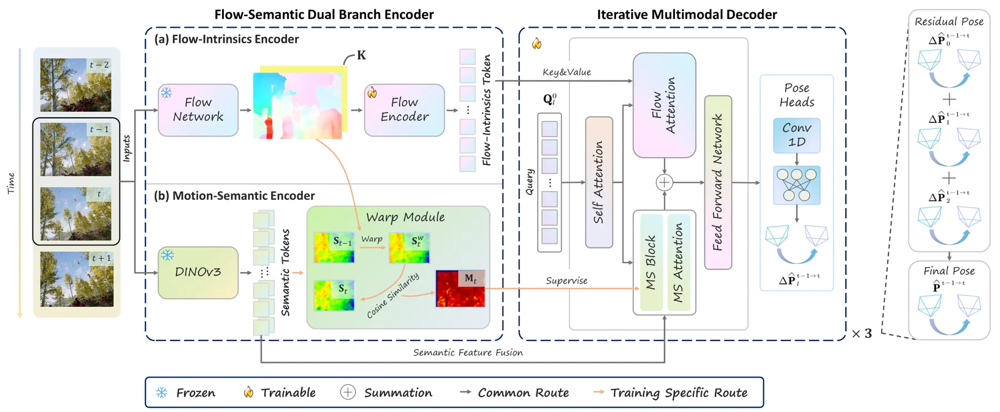
{kind=link}
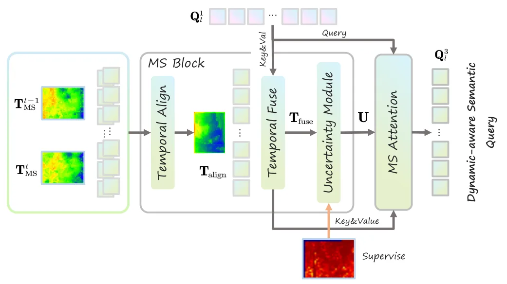
{kind=link}
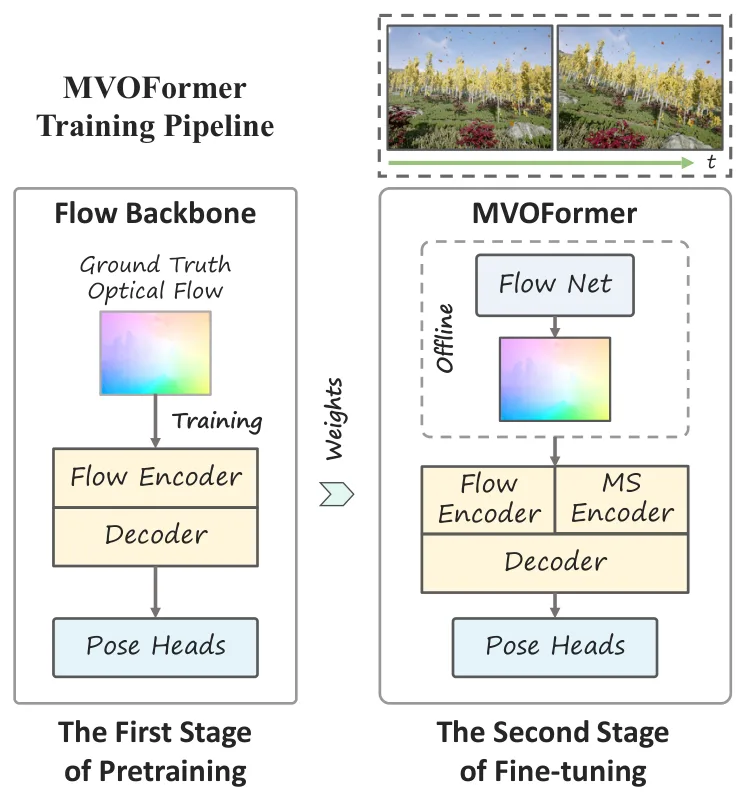
{kind=link}
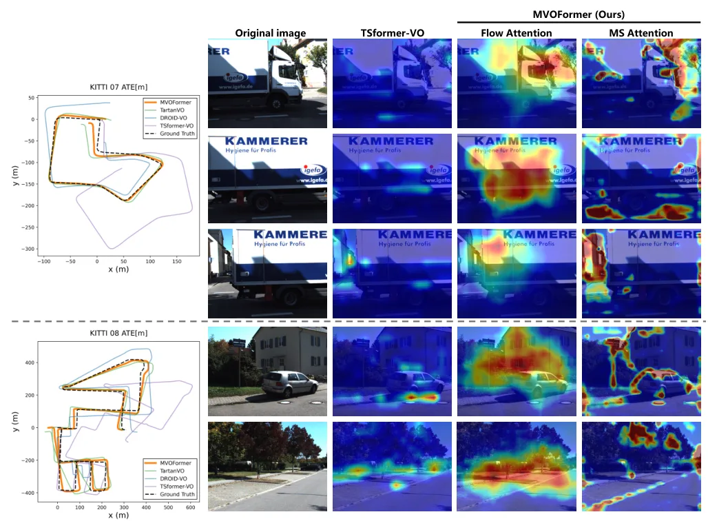
{kind=link}
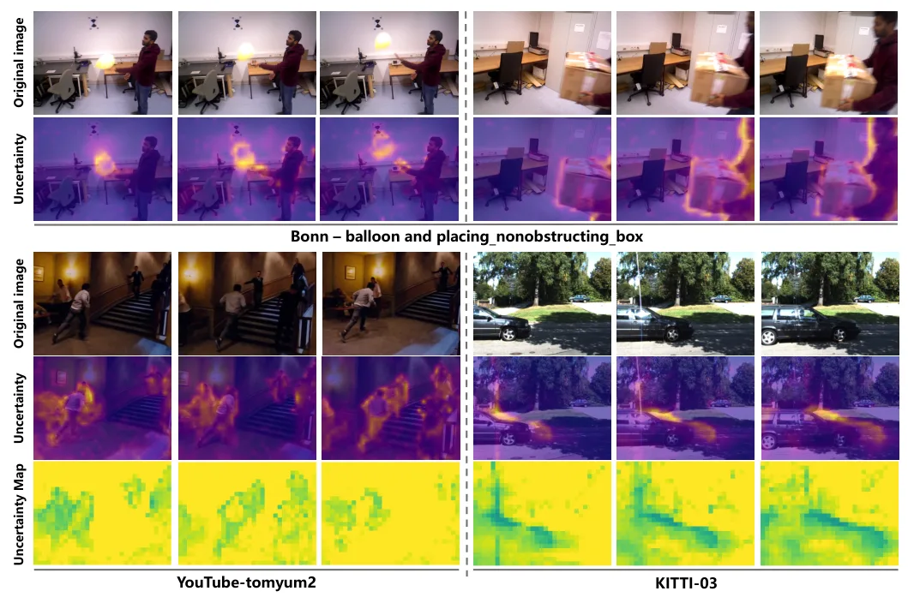
{kind=link}
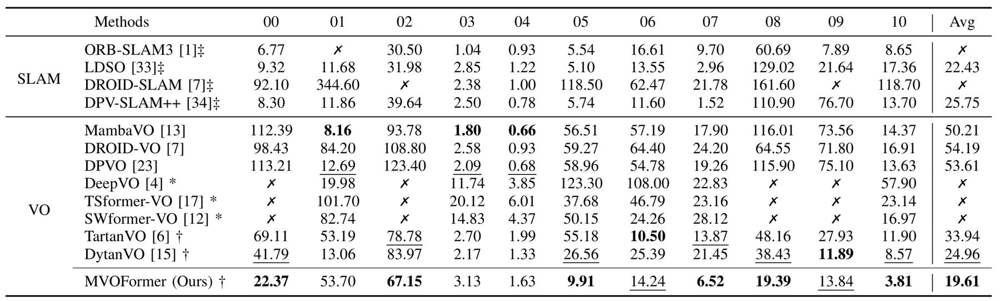
{kind=link}
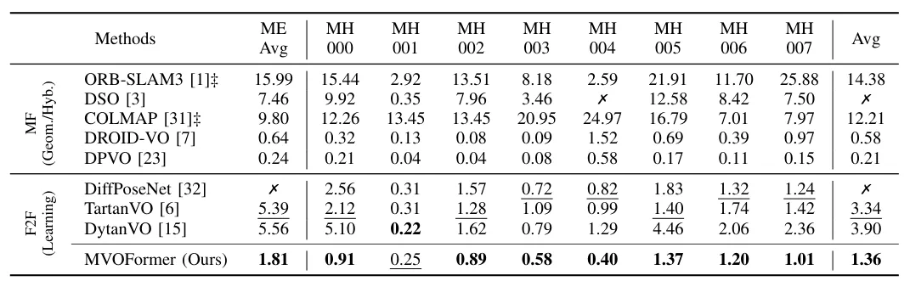
{kind=link}
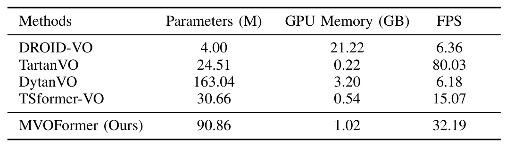
{kind=link}
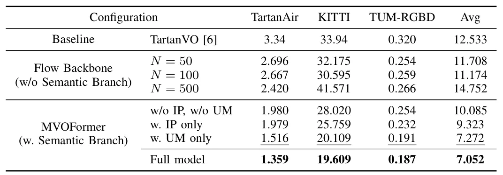
{kind=link}
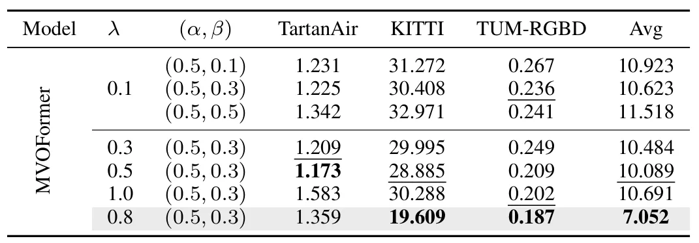
{kind=link}
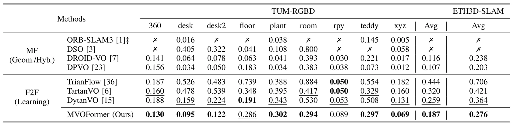